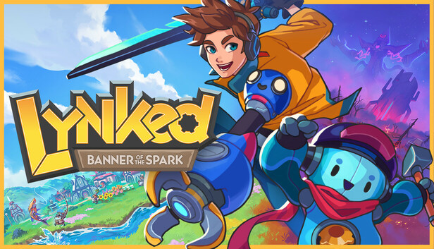

Meu Jogo Incrível - Guia Rápido 🎮

Bem vindo ao guia rápido para dominar os segredos de "Meu jogo Incrível"! Prepara-se para a aventura © 2025
Comandos Essenciais de Movimentação
- Mover para Cima:Tecla /Console:
- Mover para Baixo:Tecla /Console:
- Mover para Esquerda:Tecla /Console:
- Mover para Direita:Tecla /Console:
- Pular/Confirmar:Tecla ou /Console: (X)
- Ação Secundária/Cancelar:
- Menu/Opções:Tecla /Console: (Triângulo)
- Inventário:Tecla / Console: (Quadrado)
Sequência de Ataque Especial (Combo "Fúria Pixelada")
- Pressione , (duas vezes rapidamente)
- Em seguida, pressione com precisão
- Finalize segurando e apertando
Glossário de Itens do Jogo
Cristal de Energia 💎
Restaura 100 pontos de energia da sua nave. Use com sabedoria!
Escudo Defletor Mk.ll
Oferece proteção temporária contra todos os tipos de dano. Dura 30 segundos.
XP Doubler
Dobra a quantidade de Pontos de Experiência ganhos por 5 minutos.